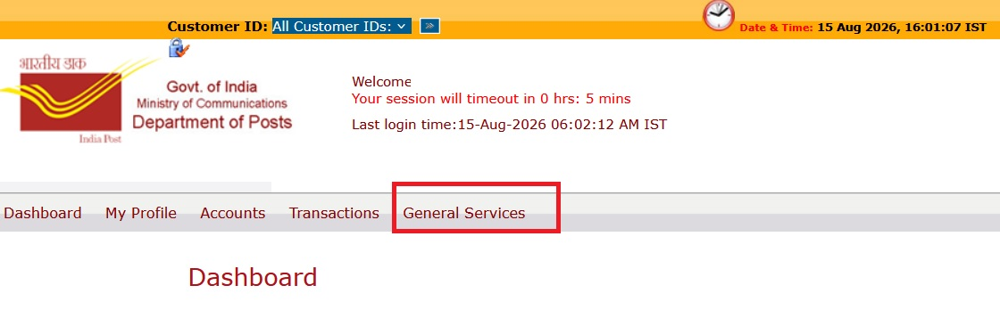
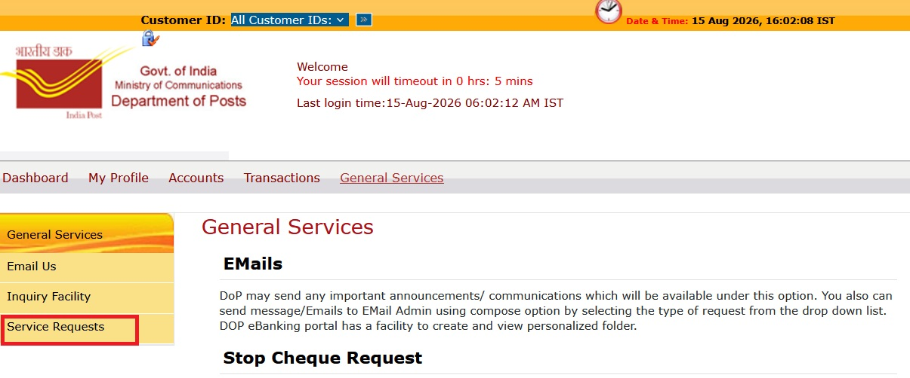

Steps to Use Pre-Close NSC Online (NOT ALLOWED ONLINE AND AT POST OFFICE)
the following error was displayed:
Account can be closed only on or after maturity.



Select your post office account.
Click Submit Online.
When attempting to pre-close the NSC one day before the maturity date, the following error is displayed.

Account can be closed only on or after maturity.
Pre-closure of the NSC is not permitted online one day before the maturity date. The system requires the account to be closed only on or after the maturity date.